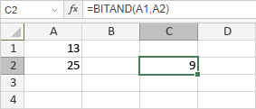

BITAND funkcija
Funkcija BITAND je jedna od inženjerskih funkcija. Koristi se za vraćanje bitovskog „AND” nad dva broja.
Sintaksa
BITAND(number1, number2)
Funkcija BITAND ima sledeće argumente:
| Argument | Opis |
|---|---|
| number1 | Numerička vrednost u decimalnom obliku veća ili jednaka 0. |
| number2 | Numerička vrednost u decimalnom obliku veća ili jednaka 0. |
Napomene
Vrednost svake bitovske pozicije računa se samo ako su bitovi oba parametra na toj poziciji jednaki 1.
Kako primeniti funkciju BITAND.
Primeri
Slika ispod prikazuje rezultat koji vraća funkcija BITAND.
